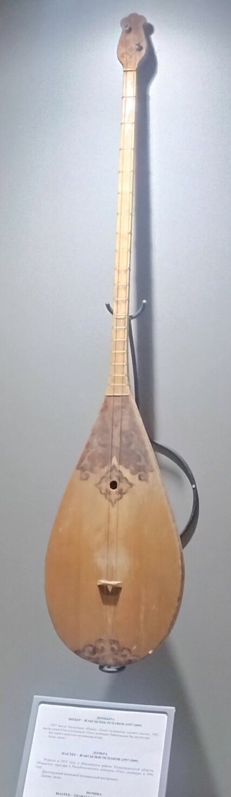
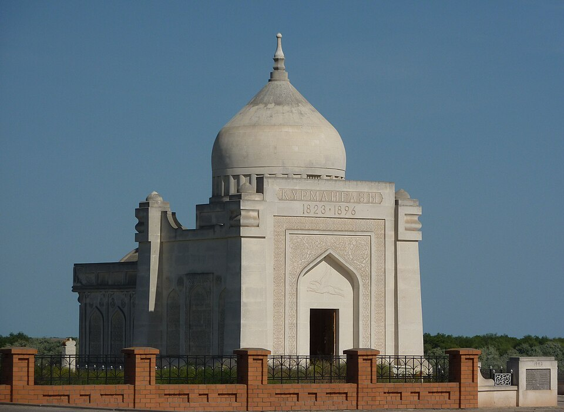

Музыка · 48-бөлім · Күй және күйшілер Music · Section 48 · The Küi Музыка · Раздел 48 · Кюй и кюйши
Күй — сөзсіз аспаптық шығарма, көбіне домбыраға арналған. Ол оқиға баяндайды, бейне салады, сезім жеткізеді. A küi is a wordless instrumental piece, most often for the dombra. It tells a story, paints an image, conveys a feeling. Кюй — инструментальная пьеса без слов, чаще для домбры. Он рассказывает историю, рисует образ, передаёт чувство.
Күй — қазақтың аспаптық (сөзсіз) шығармасы, көбіне домбыраға немесе қобызға арналған. A küi is a Kazakh instrumental (wordless) piece, most often for the dombra or the kobyz. Кюй — казахская инструментальная (без слов) пьеса, чаще для домбры или кобыза.
Күй — бағдарламалық: ол оқиға баяндайды, бейне салады, сезім немесе оқиғаны жеткізеді. A küi is programmatic: it tells a story, paints an image, conveys a feeling or an event. Кюй программный: он рассказывает историю, рисует образ, передаёт чувство или событие.
Күйші — күйді орындаушы әрі шығарушы, халық шебері. A küishi is a performer and composer of küis, a folk master. Кюйши — исполнитель и сочинитель кюев, народный мастер.
💡 Күй — сөзсіз, бірақ «сөйлейді»: домбыраның үні арқылы тұтас оқиғаны баяндайды. 💡 A küi has no words, yet it "speaks": through the dombra's sound it narrates a whole story. 💡 Кюй без слов, но «говорит»: звуком домбры он рассказывает целую историю.

| БелгісіFeatureПризнак | ⚡ Төкпе⚡ Töqpe⚡ Төкпе | 🌙 Шертпе🌙 Shertpe🌙 Шертпе |
|---|---|---|
| АймағыRegionРегион | Батыс ҚазақстанWestern KazakhstanЗападный Казахстан | Орталық / ШығысCentral / EasternЦентральный / Восточный |
| СипатыCharacterХарактер | белсенді, қуаттыactive, powerfulактивный, мощный | жұмсақ, лирикалықsoft, lyricalмягкий, лиричный |
| Ойнау тәсіліTechniqueПриём игры | екі ішекті бірге қағуstrumming both stringsудар по обеим струнам | ішекті шерту (іліп)plucking the stringsщипком |
| ШеберіMasterМастер | ҚұрманғазыKurmangazyКурмангазы | ТәттімбетTattimbetТаттимбет |
Сағырбайұлы · 1818–1896 Sagyrbaiuly · 1818–1896 Сагырбайулы · 1818–1896
Кемеңгер домбырашы, төкпе стилінің негізін салушы. Атақты күйі — «Сарыарқа». A genius dombra player, the founder of the töqpe style. His famous küi — "Saryarka". Гениальный домбрист, основоположник стиля төкпе. Знаменитый кюй — «Сарыарка».
Шығайұлы · 1814–1887 Shygaiuly · 1814–1887 Шигаевич · 1814–1887
Күйші-ақсүйек (текті). Күйлері лирикалы, психологиялық, нәзік әрі терең. An aristocratic küishi. His küis are lyrical and psychological, subtle and deep. Кюйши-аристократ. Его кюи лиричные, психологичные, тонкие и глубокие.
Қазанғапұлы · 1815–1862 Qazangapuly · 1815–1862 Казангапулы · 1815–1862
Шертпе стилінің ұлы шебері. Оның күйлері — терең ойлы, жан тебірентерлік. The great master of the shertpe style. His küis are thoughtful and deeply moving. Великий мастер стиля шертпе. Его кюи глубоко содержательны и проникновенны.

🏆 Құрманғазы есімі — мақтаныш атауы. Оның атымен аталады: 🏆 The name Kurmangazy is a name of pride. Named after him are: 🏆 Имя Курмангазы — имя гордости. Его имя носят:
💡 Күй өнері ұрпақтан-ұрпаққа ауызша беріліп, бүгінге жетті — бұл қазақ музыкасының асыл қазынасы. 💡 The art of the küi was passed down orally from generation to generation — a precious treasure of Kazakh music. 💡 Искусство кюя передавалось устно из поколения в поколение — драгоценное наследие казахской музыки.
🎧 батырманы басып, домбыраның жанды әуенін тыңдаңыз tap the button and hear a lively dombra motif нажмите кнопку и послушайте живой мотив домбры
📌 Домбыраның екі ішегі жылдам кезектесіп ойналады — осыдан күйдің ерекше жанды, жүгірмелі дыбысы туады. 📌 The dombra's two strings are played in quick alternation — this gives the küi its lively, running sound. 📌 Две струны домбры играются быстрым чередованием — отсюда особое живое, бегущее звучание кюя.